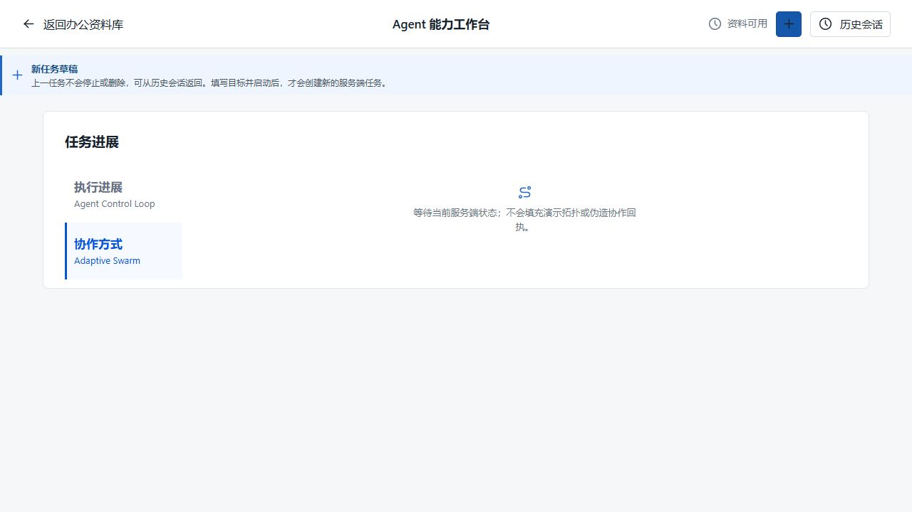
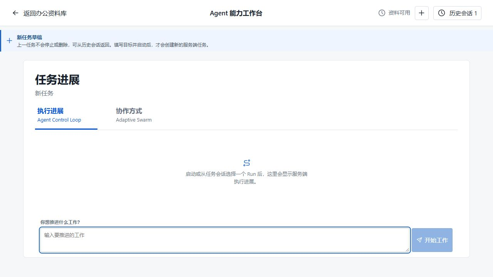
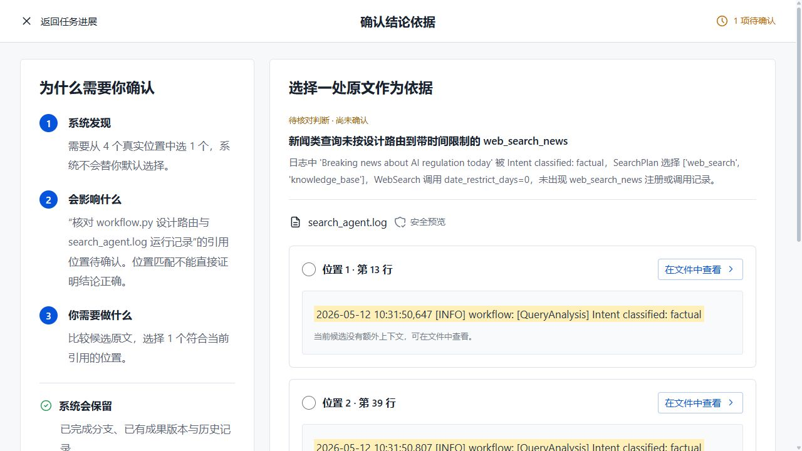
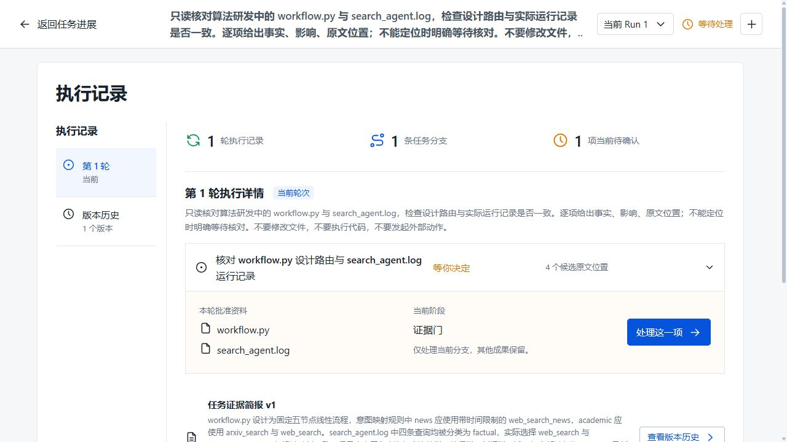

2026-09-11 · 实际浏览器操作 + 真实 Provider 单任务 + 受控自动化
协作页新任务没有输入框；证据页缺少正在核对的判断。
1 次 Planner、2 次 Analyst，保留两条发现，歧义处暂停。
模型只读到日志前段，却给出未限定范围的摘要。
本次不是“全部通过”：交互修复不等于内容质量通过。真实任务仍在等待处理，未替用户选择原文或启动下一轮。
先看发现的问题
| 编号 | 问题与复现 | 处理结果 |
|---|---|---|
| UI-01 | 协作方式 → 新建任务。只有草稿提示，输入框没出现；连续新建空草稿也会复现。 | 已修复并复验 明确切回输入面、移除旧 hash、聚焦输入；旧 Run 不变。 |
| UI-02 | 看见 4 个候选行，却没有在首屏说明当前哪条判断需要引用。 | 已修复并复验 显示待核对标题和摘要，标为尚未确认，不代选。 |
| Q-01 | 摘要只讲了 10:31 的四条 factual，遗漏 10:32 的 comparison/news/tutorial 和新闻专用路由。 | 未解决，内容验收不通过 已定位单文件模型输入 12,000 字符上限与前段截断；需要覆盖与续读合同，不是多改一句提示词。 |
UI-01：实际页面修复前 / 后


UI-02：实际待核对判断与 4 个候选

你现在就能验收：不用调用模型
打开工作台，按下面的顺序操作。检查框仅供本页手动记录，刷新会清空，不提交任何数据。
失败判据：找不到输入框、误启动模型、旧任务消失、旧成果被清空。当前 memory 服务重启后不恢复任务，这与刷新浏览器不同。
真实任务输入与观察
重新提交会调用当前配置的 Provider，结果可能不同。查看已保留的历史任务则无需再调用模型。
本次真实路径：规划 → 两份来源 → 分析 → 定位拒绝 → 一次受控重试 → 保留 2 条发现与 v1 → 4 个位置待确认 → 暂缓。
调用数 3，active elapsed 63.559 秒；没有 Worker 派发、源文件改写或外部动作。原文预览能定位第 13 行；只查看没有自动选中；退出没有消耗下一轮。
查看实际执行记录截图

为什么不能把这条任务算成功
原文可预览，不代表模型读到了全部原文
浏览器能显示 25,211 字符的日志；模型单文件输入被限制为前 12,000 字符，约到第 109 行。第二次启动从第 113 行才开始。当前结果没有把这个读取边界讲清楚。
| 原文位置 | 可人工核验的事实 | 对结论的约束 |
|---|---|---|
| 13/39/65/91 | 第一次启动的四条查询均为 factual | 可以描述前段，不能外推全文。 |
| 125/155/182/212 | 第二次启动出现 comparison、news、tutorial、news | 全文不只有四条 factual。 |
| 162/216 | 实际选择 web_search_news | 不能全局声称未触发新闻路由。 |
下一步验收必须加入“后段出现反例”的用例，明确模型读取范围、未读区间、续读与完成门。本轮没有靠增大上限、固定结论文案或硬编码样本假装修好。
自动化覆盖与边界
新建任务：先红（1 失败 / 2 通过）后绿（3 通过）。全量 Playwright：91 通过，3.3 分钟；TypeScript、生产构建、4 项文档治理检查通过。真实任务内容覆盖仍未通过。
覆盖了无预选、预览不选择、确认失败、defer 冲突退出、历史只读、局部协作保留、空波次禁用和窄屏。自动化使用受控 API，不等于真实模型多 Worker、真实 PostgreSQL 或业务正确性。
后续每次交付沿用：改动、输入、操作、预期、实际结果、失败与未验证项。不会只交一个绿色测试总数。